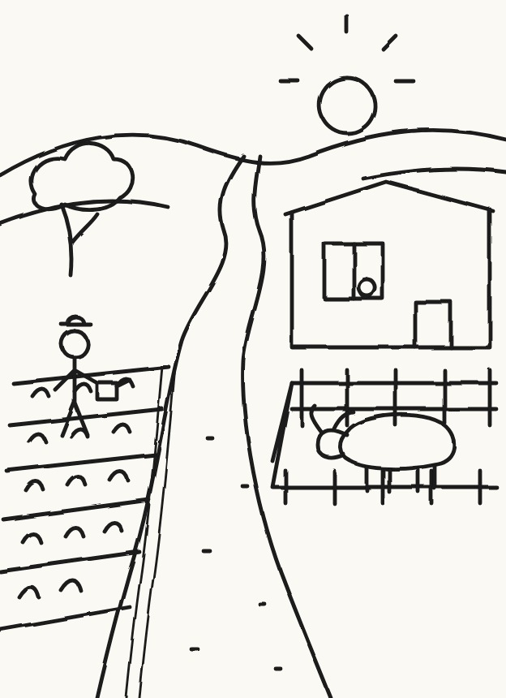
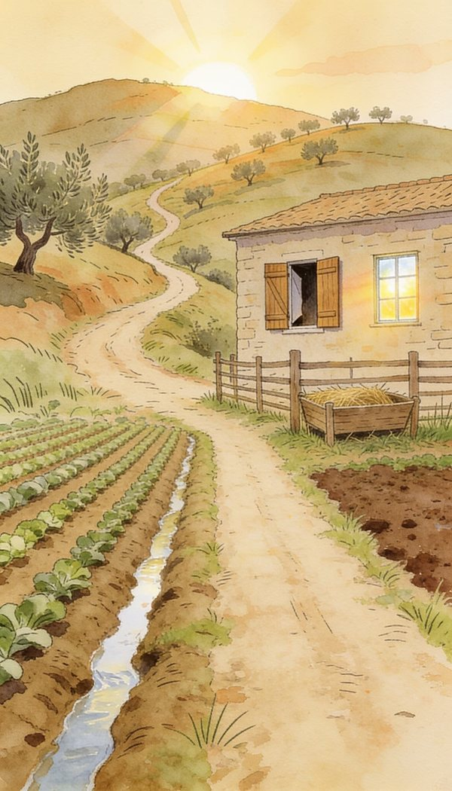
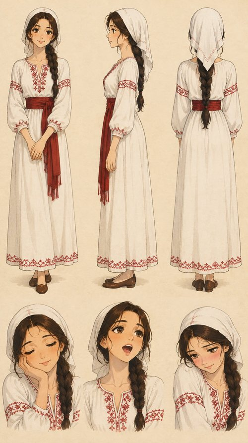
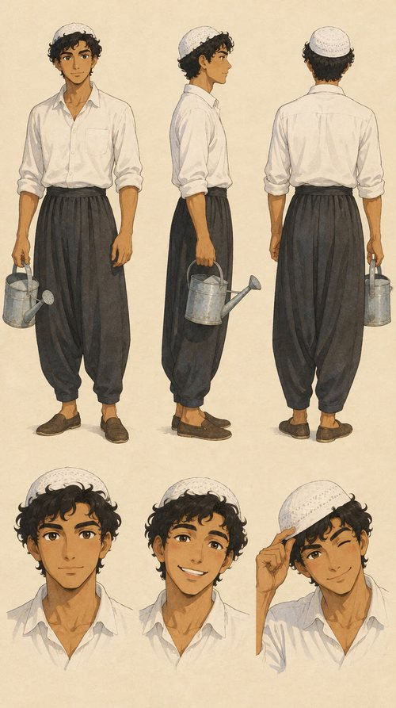
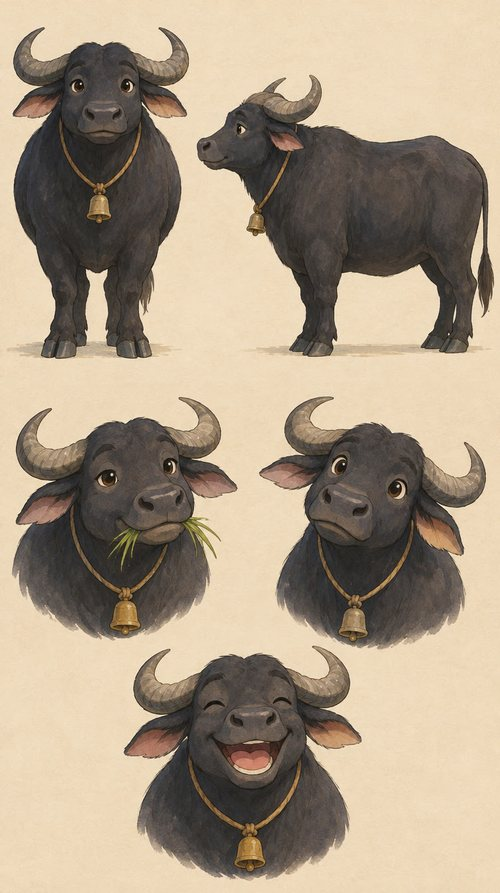
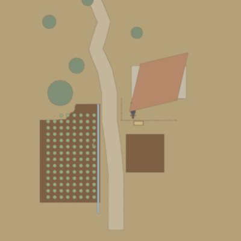
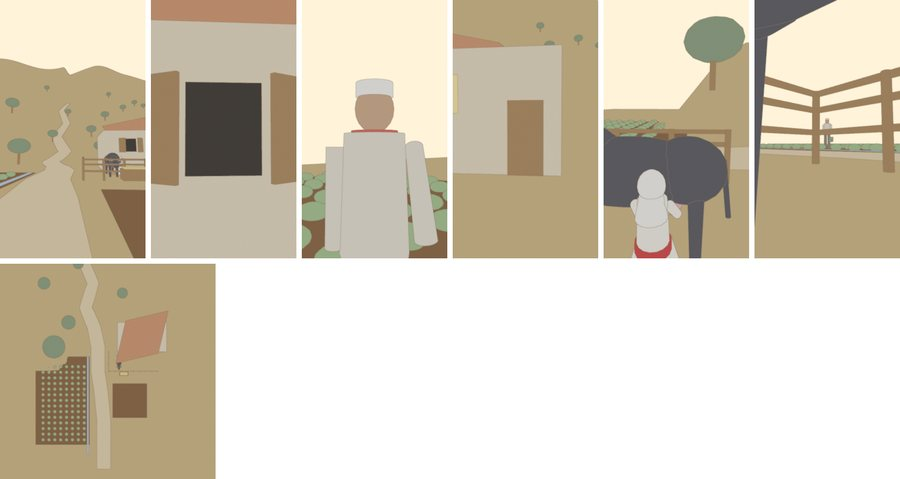
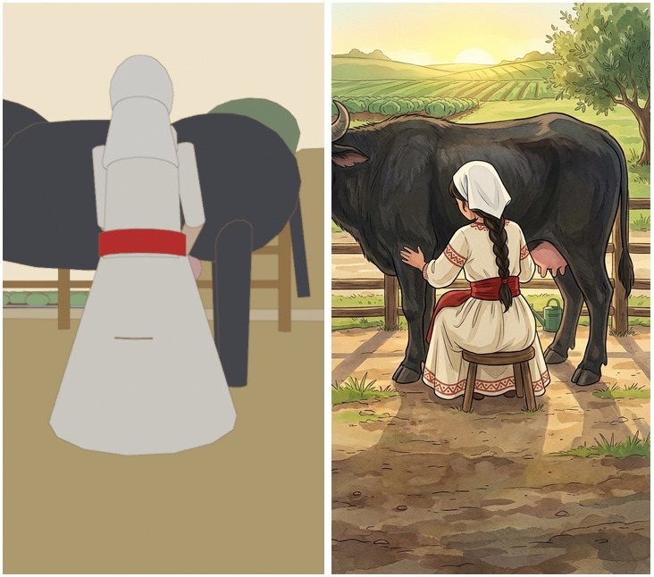

شرح كامل للطريقة: من رسمة باليد، لشخصيات ثابتة، لمكان مبني 3D، لفيديو متماسك. كل البرومبتات الحقيقية موجودة هون وفيك تنسخها.
فكرة←رسمة←شخصيات←مكان←3D←فيديو←مونتاج
الأدوات اللي استخدمناها
Claude: هو المخرج المساعد. بنكتب معه القصة والبرومبتات، وهو بيولّد الصور والفيديو مباشرة بعد ما نربطه بهيغزفيلد.
Higgsfield: المنصة اللي فيها موديلات الصور والفيديو والـ 3D.
Nano Banana: لتوليد الصور وتعديلها مع الحفاظ على المراجع.
3D Scene Builder: لبناء المكان وتثبيت الشمس والكاميرات.
Seedance 2.5: لتحريك اللقطات وتحويلها لفيديو.
1
ربط Claude مع Higgsfield
بدل ما تنسخ البرومبت من مكان وتلزقه بمكان تاني، بتربط الاثنين ببعض، وبيصير Claude يولّد الصور والفيديو جوّا المحادثة.
افتح claude.ai وروح على Settings ثم Connectors.
دوّر على Higgsfield واضغط Connect. إذا ما طلع بالقائمة، أضفه كـ Custom connector بالرابط اللي بتعطيك ياه هيغزفيلد.
سجّل دخول بحساب هيغزفيلد ووافق على الصلاحيات.
بأي محادثة جديدة، تأكد إنو الموصل مفعّل من زر الأدوات تحت مربع الكتابة.
صار فيك تحكي: «ولّد لي هذا المشهد بـ Nano Banana» أو «حرّك هذه الصورة بـ Seedance»، و Claude بيختار الموديل وبيبعت الطلب وبيرجّعلك النتيجة.
ليش هذا مهم؟ لأنو Claude بيتذكّر كل المراجع والقرارات بالمحادثة، فبتضل الشخصيات والمكان نفسهم من أول لقطة لآخر لقطة.
2
من الفكرة للرسمة
الفكرة كانت بسيطة: مزرعة صغيرة الصبح، بنت اسمها ليلى، شب اسمه سمير، وجاموسة. قبل أي برومبت، رسمت المشهد بإيدي بالماوس على Illustrator، لأنو الرسمة بتحدد التوزيع: وين الحقل، وين الطريق، وين البيت، ووين الحظيرة.

رسمة باليد

بعد Nano Banana
بعدها بعتنا الرسمة لـ Nano Banana وطلبنا يحوّلها لمشهد مرسوم بنفس التوزيع بالضبط:
برومبت تحويل الرسمة
Use the attached sketch as the exact layout. Turn it into a finished scene in hand-painted 2D Japanese studio animation style, soft watercolor and gouache. Keep every element in the same place: field with irrigation channels on the left, dirt road in the middle, low wooden fence pen on the right, small single-storey house. Golden early-morning sunlight. Vertical 9:16, no text.
القاعدة: الرسمة مش لازم تكون حلوة. المهم تكون واضحة، لأنها هي اللي بتقرر التكوين مش الموديل.
3
كيف نكتب البرومبت
كل برومبت بالفيلم مكتوب بنفس الترتيب. إذا مشيت على هذا الترتيب، النتيجة بتصير متوقعة أكتر:
سمّي كل صورة مرجع برقمها: image 1 = المكان، image 2 = ليلى… هيك الموديل ما بيخلط بين المراجع.
اكتب الستايل نفسه بكل برومبت حرفياً، حتى ما يتغيّر الرسم بين لقطة ولقطة.
بالتعديل غيّر شي واحد بس واكتب «keep everything the same». إذا غيّرت أكتر من شي، الموديل بيعيد رسم كل شي.
اختم دايماً بـVertical 9:16, no text حتى ما يطلع كتابة غريبة جوّا الصورة.
مثال تعديل (شي واحد بس)
Keep everything exactly the same. Only change: make the house a single-storey house with a flat roof. Same style, same light, same camera. Vertical 9:16, no text.
4
الشخصيات الثابتة
أكبر مشكلة بالفيديو بالذكاء الاصطناعي إنو الشخصية بتتغيّر من لقطة للتانية. الحل: ورقة شخصية (Character sheet) لكل شخصية، من قدّام وجنب وورا مع تعابير الوجه، وبعدها هي المرجع الوحيد بكل لقطة.

ليلى

سمير

الجاموسة
برومبت ورقة ليلى
Character reference sheet of Layla, a beautiful 19-year-old young woman from a Levantine village: white cotton headscarf, white linen dress with red cross-stitch embroidery, red sash. Hand-painted 2D Japanese studio animation style, soft watercolor and gouache. Front view, side view, back view and three expressions (smiling, surprised, shy). Plain light background. No text.
اختار تفاصيل بتنعرف من بعيد: الشال الأبيض والزنار الأحمر لليلى، الطاقية والرشّاش لسمير، الجرس للجاموسة.
الشخصيات قبل المكان: بنولّد الأوراق أول شي، وبعدها بندخّلها على المكان كمراجع.
إذا عجبتك ورقة لا تعيد توليدها. ثبّتها واشتغل عليها للآخر.
5
اختيار المكان والشمس
المكان هو الشخصية الرابعة بالفيلم. قبل ما نولّده، قررنا قواعد ثابتة وما غيّرناها أبداً:
التوزيع: الحقل مع السواقي عاليسار، الطريق بالنص، الحظيرة الخشب الواطية عاليمين، والبيت طابق واحد.
الشمس: شروق ذهبي من جهة وحدة، حتى يكون الضو والظل بنفس الاتجاه بكل اللقطات. هذا أكتر شي بيخلّي الفيلم يبين حقيقي.
الوقت والجو: الصبح بكير، ضباب خفيف، ألوان دافية. هذا بيعطي إحساس فيروز.
لقطة واسعة أول شي: ولّدنا أوسع لقطة قبل الكل، وبعدها استعملناها كمرجع إضافي لكل اللقطات القريبة.
برومبت لقطة مع الشخصيات
Use the attached images as references: image 1 = the approved location (keep it exactly, same layout, same light); image 2 = Layla; image 3 = Samir; image 4 = the water buffalo. Layla stands at the window of the house, Samir walks on the road with his watering can, the buffalo rests inside the fence pen. Same 2D hand-drawn line art and watercolor style. Golden sunrise from the left, long soft shadows. Vertical 9:16, no text.
6
الـ 3D: سر التماسك
هون الفرق بين فيديو عادي وفيلم. بنينا المزرعة كمشهد 3D بسيط على هيغزفيلد (3D Scene Builder)، مش لنعرضه، بل لنستعمله كخريطة تصوير.

المشهد من فوق مع الكاميرات

زوايا الكاميرات
ابني المكان: نفس توزيع الرسمة: البيت، الطريق، الحظيرة، الحقل والشجر. أشكال بسيطة بتكفي.
ثبّت الشمس: حط الشمس بمكانها مرة وحدة. هيك كل زاوية بتطلع بنفس اتجاه الضو.
حط الكاميرات: لقطة من فوق للخريطة، وبعدها كاميرات مرقّمة (CAM 01 لـ CAM 07) لكل لقطة بالقصة، وحركة كرين للقطة الافتتاحية.
من الـ 3D للرسم: بناخد صورة كل كاميرا ونبعتها لـ Nano Banana مع أوراق الشخصيات، ونطلب يرسمها بالستايل. الزاوية والمسافات بتضل صحيحة لأنها جاية من 3D.
برومبت من 3D لرسم
Image 1 is a 3D blockout of the scene: keep its exact camera angle, perspective, layout and sun direction. Repaint it as a finished frame in hand-painted 2D Japanese studio animation style, soft watercolor and gouache, matching image 2 (the approved location). Add Layla from image 3 exactly as she appears there. Vertical 9:16, no text.
فيك تطلبها من Claude: بعد الربط، Claude بيقدر يبني المشهد ويحط الكاميرات ويولّد الزوايا بنفسه، وإنت بتراجع وبتعدّل.
7
الفيديو على Seedance 2.5
كل لقطة فيديو إلها صورة بداية وصورة نهاية، وبرومبت قصير بيوصف الحركة بس، مش المشهد كله.
سلسلة الفريمات: آخر فريم من اللقطة بيصير أول فريم للقطة اللي بعدها. هيك ما في قفزات ولا تغيير بالألوان.
لقطات قصيرة: 5 لـ 8 ثواني لكل لقطة، أسهل للتحكم وأسهل للمونتاج.
برومبت حركة
Continuous slow pull-back revealing the fence pen and the water buffalo. Layla walks calmly toward the pen. Gentle morning breeze in the grass. Keep the same 2D watercolor style, no style change, no text.
8
مثال: لقطة الكوميديا
عالشمال الزاوية من الـ 3D، وعاليمين اللقطة النهائية. ليلى بتدوّر على شي… وفجأة بتطلع وردة. التوقيت المضحك كله مخطط بالـ 3D قبل التوليد.

9
المونتاج على فيروز
الأغنية أول شي: حطينا أغنية فيروز عالتايم لاين وقطّعنا اللقطات على الإيقاع.
القطع على الحركة: كل قطع بيصير وقت ما في شي عم يتحرك، هيك بيبين ناعم.
الكلمات على الشاشة: حطينا كلمات الأغنية بخط عربي بسيط تحت، بدون مبالغة.